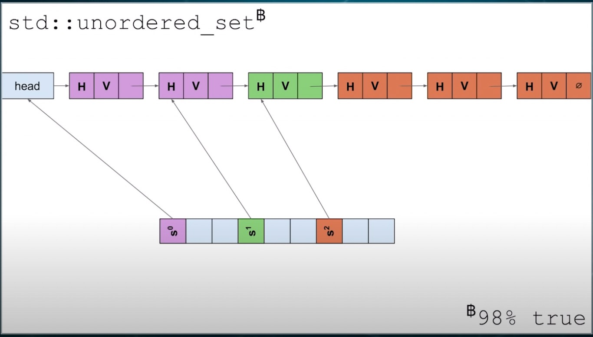
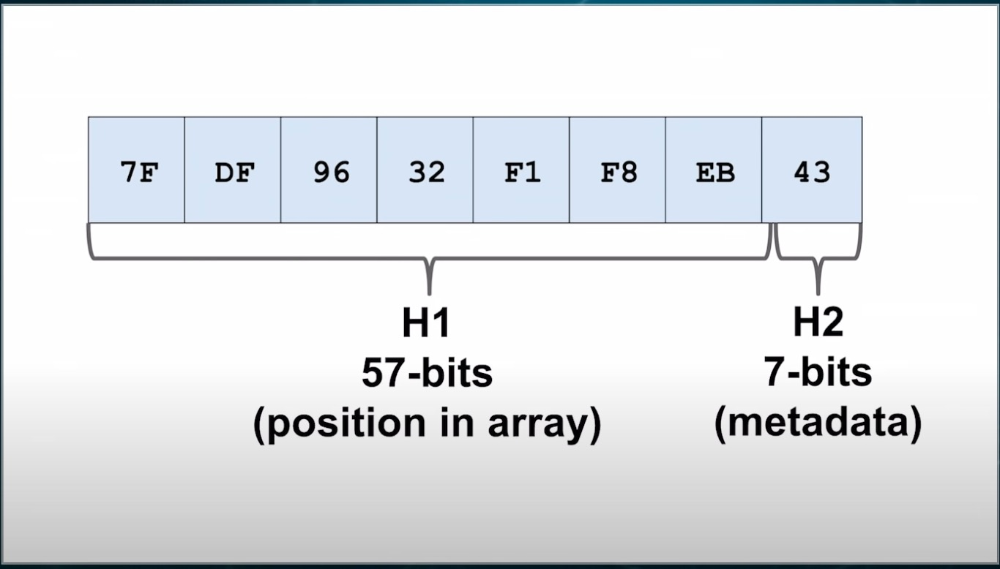
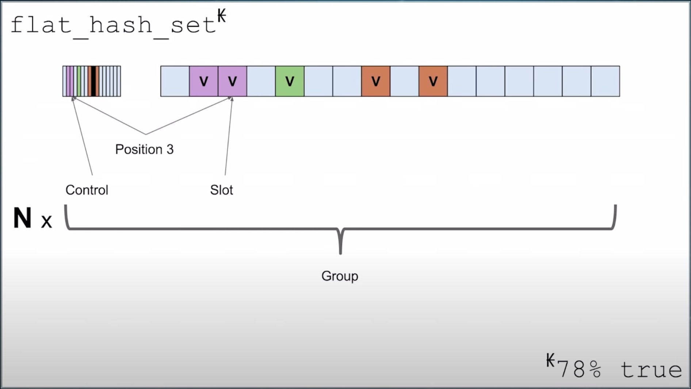

Hash Table in Rust: SwissTable
在看 Rust 的文档的时候看到了这么一句：
The hash table implementation is a Rust port of Google’s SwissTable. The original C++ version of SwissTable can be found here, and this CppCon talk gives an overview of how the algorithm works.
SwissTable 主要希望解决 cpp 标准库中 std::unordered_map, std::unordered_set 的一些痛点，包括：
- 由于使用链表解决哈希冲突，对 cpu 缓存不友好
- 对于每个值，需要存储 hash value，导致额外的内存使用
- 每次 find 操作都需要 3 步，即：1) 找到 bucket，2) 跳过链表的 dummy head 节点，3) 开始遍历链表，其中第二步是可以优化的（flat map）
出于好奇，了解了下 SwissTable 和 cpp 标准库的 HashTable 实现有什么区别。
1 HashTable in cpp standard library

如图所示：
- 标准库 HashTable 使用链地址法解决冲突，即 bucket + linked list。
- 对于每个值，在链表里存储它的 hash value 和 pointer，一共 16 字节，还有链表节点指针的额外开销 8 字节。
值得注意的是：
- 对于每个 bucket 的 linked list，都有一个 dummy head（为了插入新的元素方便）
- 在标准库的实现里，把所有的 value 连接成了一个大的 linked list，这是为了优化迭代性能（跳过空的 bucket）
- 在 2 的前提下，dummy head 被设置为上一个 bucket 的最后一个元素
2 SwissTable
High level concepts to keep in mind: - open-addressing - searches in parallel using SIMD - first-come-first-serve collision resolution - chunked (SIMD) triangular (quadratic-ish) probing - tombstones to avoid backshifts
相对于标准库的实现，SwissTable 做了一些修改。
| # | Modification | What we gain | What we lose |
|---|---|---|---|
| 1 | 去掉 dummy head | find 时减少一次链表节点操作 | 迭代整个容器需要遍历所有空桶 |
| 2 | 去掉 hash value | payload 从 16 字节减少到 8 字节 | rehash 的时候需要重新计算 hash value，但是用户也可以选择自己存在结构体里 |
| 3 | 不再使用链地址法，转而使用开放地址法解决冲突 | 去掉了链表节点指针的开销 8 字节，并且对缓存友好 | 需要记录元素状态，load factor 失效 |
| 4 | 直接把值放到 bucket 里 | 省去从 bucket 跳转具体值的过程 | 需要哨兵，且元素越多性能越差 |
| 5 | 将哨兵换成 meta data | 性能更优 | 实现复杂 |
对于 5，meta data 需要表示每一个坑位处于哪一种状态：
- empty
- full
- deleted
因为有 3 个状态，没办法用一个 bit 表示一个坑位，这就非常蛋疼了。
2.1 Control Bytes and Hashes
SwissTable 通过 两级的 hash value 解决了这个问题，分别是 57 bits 的 H1 和 7 bits 的 H2。

其中，meta data 由一个 bit 以及 H2 组成，一共 1 个字节。它可能表示：
0b11111111, empty0b10000000, deleted0b0xxxxxxx, full, and the lower 7 bits is H2
注意，meta data 是单独存放的，即 H2 并不和 hash value 共用。并且 SwissTable 中的值本来也不保存其 hash value。
2.2 Searching and Probing
Here's the pseudo code:
// higher 57 bits
size_t H1(size_t hash) {return hash >> 7;}
// lower 7 bits
size_t H2(size_t hash) {return hash & 0x7f;}
iterator find(const K& key, size_t hash) const {
size_t pos = H1(hash) % size_;
while (true) {
// H1, H2 and key match
if (H2(hash) == ctrl_[pos] && key == slots_[pos]) {
return iterator_at(pos);
}
// note that "kEmpty" (but not "kDeleted") indicates the ends of elements under H1
if (ctrl_[pos] == kEmpty) {
return end();
}
// H1 matches, H2 or key does not match, try next element with the same H1
pos = (pos + 1) % size_;
}
}
find 操作的基本步骤：
- 求得 key 的 hash value，得到 H1 和 H2
- 通过 H1 取余找到对应的 bucket index (
pos) - 对比 H2 和
pos对应的 meta data，如果匹配，再比较 key，若匹配，返回找到的元素 - 若没找到，移动到
pos + 1继续比较，直至找到 meta data 是 EMPTY
优势：
- extremely cache friendly. 我们对比的 meta data (
ctrl_) 只有一个字节大小，64kB 的 L1 cache 可以存 64*1024 个。
2.3 SIMD optimization
上面的算法看起来已经非常完美了，但是我们可以使用 SIMD(Single Instruction Multiple Data) 进一步优化 meta data 的比较。这些指令可以同时操作 16 字节的数据，带来极大的效率提升。但是他们只作用于 Intel 而非 ARM 的芯片，因为 ARM 采用精简指令集（sorry， Apple M1/M2)。
用到的指令：
_mm_set1_epi8令 16 bytes 的数据等于某个相同的值_mm_cmpeq_epi8byte-wise 地对比两个 16 bytes 的数据_mm_movemask_epi8将每个 byte 的最高位取出，16 bytes 的数据变为了 16 bits
组合起来：
BitMask<uint32_t> Match(h2_t hash) const {
auto match = _mm_set1_epi8(hash);
return BitMask<uint32_t>(_mm_movemask_epi8(_mm_cmpeq_epi8(match, ctrl)));
}
因为可以并行处理 16 个 meta data，我们可以把每 16 个元素的 meta data 和 slots 捆绑成一个 Group，并以 Group 为单位实现 find 操作。

iterator find(const K& key, size_t hash) const {
// pos of a group
size_t pos = H1(hash) % num_groups_;
while (true) {
Group g{ctrl_ + pos * 16};
// use SIMD function above to group-wise compare and find matched buckets
for (int i : g.Match(H2(hash))) {
if (key == slots_[pos + i]) {
return iterator_at(pos * 16 + i);
}
}
if (g.MatchEmpty()) {
return end();
}
// next Group, instead of bucket
pos = (pos + 1) % num_groups_;
}
}
Real Code in Rust
hashbrown 使用 Rust 实现了 SwissTable，它的 find 实现如下：
#[inline]
fn probe_seq(&self, hash: u64) -> ProbeSeq {
ProbeSeq {
pos: h1(hash) & self.bucket_mask,
stride: 0,
}
}
/// Searches for an element in the table. This uses dynamic dispatch to reduce the amount of
/// code generated, but it is eliminated by LLVM optimizations.
#[inline]
fn find_inner(&self, hash: u64, eq: &mut dyn FnMut(usize) -> bool) -> Option<usize> {
let h2_hash = h2(hash);
let mut probe_seq = self.probe_seq(hash);
loop {
let group = unsafe { Group::load(self.ctrl(probe_seq.pos)) };
for bit in group.match_byte(h2_hash) {
let index = (probe_seq.pos + bit) & self.bucket_mask;
if likely(eq(index)) {
return Some(index);
}
}
if likely(group.match_empty().any_bit_set()) {
return None;
}
probe_seq.move_next(self.bucket_mask);
}
}
可以看出基本和上文描述一致，但是它使用了三角数组来选择下一个探测位置。